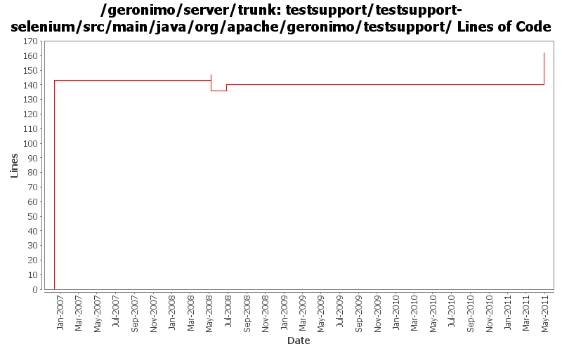

[root]/testsupport/testsupport-selenium/src/main/java/org/apache/geronimo/testsupport
 console
(1 files, 140 lines)
console
(1 files, 140 lines)

| Author | Changes | Lines of Code | Lines per Change |
|---|---|---|---|
| Totals | 13 (100.0%) | 226 (100.0%) | 17.3 |
| prasad | 2 (15.4%) | 143 (63.3%) | 71.5 |
| xiaming | 2 (15.4%) | 42 (18.6%) | 21.0 |
| jdillon | 6 (46.2%) | 25 (11.1%) | 4.1 |
| dwoods | 3 (23.1%) | 16 (7.1%) | 5.3 |
GERONIMO-5787 fix admin console testsuite problem, patch provided by LiWenQin
42 lines of code changed in 2 files:
GERONIMO-4170 Upgrade Selenium version for Firefox 3. Upgraded to 1.0-SNAPSHOT artifacts until beta-2 or later is released.
4 lines of code changed in 1 file:
go back to using DEFAULT_PORT with 1.0-beta-1
4 lines of code changed in 1 file:
GERONIMO-4170 Add ability to use Firefox or IExplorer. Remove usage of DEFAULT_PORT which is no longer defined in the latest 1.0-SNAPSHOT artifacts. Staying with 1.0-beta-1 for now, as the SNAPSHOTS still do not work with FF3.
8 lines of code changed in 1 file:
Looks like some bits of sec-tests use this so make it protected again
1 lines of code changed in 1 file:
Use waitForPageLoad()
1 lines of code changed in 1 file:
Move some dep versions to dm
Add some sanity checks to selenium client muck
14 lines of code changed in 1 file:
Added waitForLoad()
7 lines of code changed in 1 file:
Std props
2 lines of code changed in 2 files:
* moved selenium from testsupport-common to testsupport-selenium
* in testsuite, changed dependency from testsupport-common to testsupport-selenium
* testsupport-common now comes by way of transitive dependency.
143 lines of code changed in 2 files: